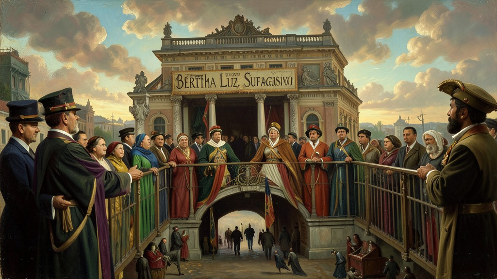
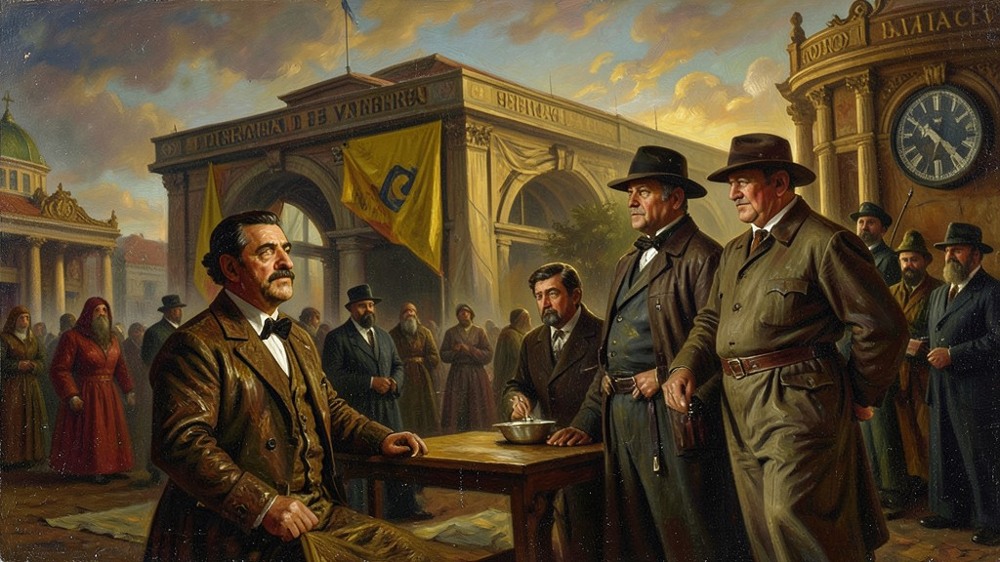

"Em 1934, o Brasil ganhou uma das suas leis mais modernas. Pela primeira vez, mulheres votavam e o Estado era obrigado por lei a proteger o trabalhador e a educação."
A **Constituição de 1934** foi o resultado da pressão paulista na Revolução de 1932. Foi a terceira constituição brasileira (e a segunda republicana), sendo considerada uma das mais democráticas e avançadas de nossa história. Inspirada na Constituição de Weimar (Alemanha), ela trouxe o **Voto Secreto** e o **Voto Feminino**, uma vitória histórica do movimento sufragista liderado por Bertha Lutz. Além disso, criou a **Justiça Eleitoral** para acabar com o 'voto de cabresto' da República Velha. No campo social, a carta de 34 incorporou os **Direitos Trabalhistas** (salário mínimo, jornada de 8 horas, férias e proteção ao trabalho da mulher e do menor). Getúlio Vargas foi eleito presidente de forma indireta pela Assembleia Constituinte para um mandato de quatro anos. No entanto, a vida dessa constituição foi curta. A polarização política entre a ANL (comunistas) e a AIB (integralistas/fascistas) serviu de desculpa para Vargas declarar estado de sítio e preparar o golpe de 1937. O ENEM costuma cobrar as conquistas femininas, a justiça eleitoral e a incorporação da legislação social no texto constitucional.
1. O Fim do Cabresto: A Justiça Eleitoral
A República Velha morreu de fraude. Os coronéis faziam os defuntos votarem. Em 1934, Vargas criou o Tribunal Superior Eleitoral. Pela primeira vez, o processo de contagem de votos saía das mãos dos políticos locais e passava para as mãos de juízes de carreira. O voto passou a ser secreto e obrigatório para homens e mulheres alfabetizados, quebrando simbolicamente o poder absoluto dos donos de terra no interior do Brasil.
2. Bertha Lutz e o Sufragismo: O Lugar da Mulher
As brasileiras lutavam pelo voto desde o Império. Em 1932, Vargas já havia promulgado o Código Eleitoral, mas a Constituição de 34 gravou essa conquista na pedra da lei. Mulheres puderam finalmente escolher seus governantes e serem eleitas (Carlota Pereira de Queirós foi a primeira deputada). O Brasil foi um dos pioneiros na América Latina a garantir a igualdade política de gênero, embora o analfabetismo ainda impedisse a maioria das brasileiras pobres de votar.

3. Trabalho: O Estado como Protetor
Antes de 1930, a questão social era 'caso de polícia'. Em 34, virou caso de lei. A constituição criou garantias básicas: salário mínimo para garantir a sobrevivência, proibição de trabalho infantil insalubre, descanso semanal remunerado e férias garantidas. Getúlio queria o apoio da massa operária urbana e usou a lei como moeda de troca para evitar que o comunismo crescesse nas fábricas brasileiras.

4. Educação e a Construção da Nação
Pela primeira vez, o governo destinava uma porcentagem fixa de impostos para a educação pública. Surgiram os ideais da 'Escola Nova', defendendo que o ensino deveria ser laico e acessível a todos. O objetivo de Vargas era 'abrasileirar' o país, combatendo o domínio de escolas estrangeiras (alemães e italianas no sul) e criando uma identidade nacional unificada através dos bancos escolares públicos de todo o território.
5. A Morte de uma Democracia Jovem
Apesar de toda a modernidade, a Constituição de 34 nasceu sob a sombra do fascismo europeu. Getúlio nunca gostou de ter seu poder limitado por deputados. O clima de 'ameaça comunista' foi alimentado pelo próprio governo para justificar o cancelamento das eleições de 1938. Getúlio rasgou o texto democrático de 34 e impôs a 'Polaca' em 1937, mergulhando o Brasil na ditadura do Estado Novo. A democracia brasileira de 34 durou tanto quanto um suspiro.
TEXTO DE APOIO
O emblemático e curto parênteses liberal da Carta Constitucional de 1934 é interpretado nos meandros historiográficos enquanto o transigente e temporário armistício provisório articulado habilmente por Getúlio após a Revolução Paulista bélica de 32 (Constitucionalista). Apresentou de modo inovador, incorporações contínuas provenientes na outorga modernizante progressista das legislações democráticas Weimaristas europeias da década.
Tratou-se marcadamente de reduto fundamental nos avanços basilares contemporâneos incorporados como O Voto (ainda que exausto ao excludente aos não-alfabetizados) ampliado do clamor conquistado e referendado na conquista fundamental feminino sufragista, estabelecimentos inalienavelmente protecionistas nacionalistas nas requisições explorações minerais atreladas nos subsolos às determinações estatais federais limitando empresas colonialistas internacionais e fundava diretrizes previdenciárias protecionistas modernizantes liberais dos direitos trabalhistas constitucionais.
As dinâmicas estruturais da República demandam compreensões que esse iluminado estatuto magnânimo durou minguantes e exíguos 3 anos sendo violentamente desmantelada subitamente no despótico Golpe Polaco de 37; contudo tal lapso de promulgações referendadas de proteções liberais consagraria para todo legado as sementes inafastáveis da consolidação contemporaneizadas no modernizado nascente do estamento burocrático estatista central moderno ao revés fragmentado.
Mini Games
Arcade Histórico
Escolha um dos jogos abaixo para fixar o aprendizado deste módulo: